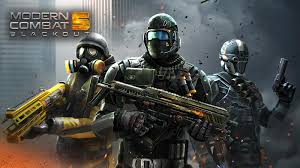
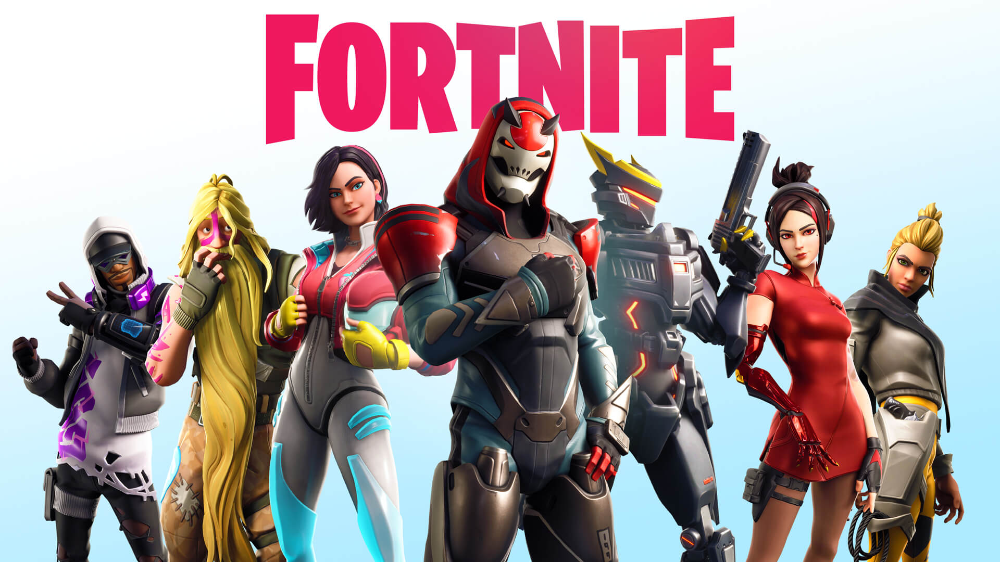

| Name of game | Description |
|---|---|
| Modern Combat 5 | Modern Combat 5, also known as Modern Combat 5: Blackout is a 2014 first-person shooter developed by Gameloft Bucharest and published by Gameloft. It is the fifth installment of the Modern Combat series and the sequel to Modern Combat 4: Zero Hour. It was released on July 24, 2014 for iOS, Android, Windows Phone 8, Windows 8.1 and BlackBerry 10, on October 24, 2018 for Steam, and for Nintendo Switch on February 14, 2019. It is the first game in the series that is developed by Gameloft Bucharest.The World Liberation Army, a terrorist organization, had attacked Venice to steal chemical weapons held by the United Nations. Cayden Phoenix(A minor character In Modern Combat 4), a freelance military contractor working for Gilman Security, is sent to Venice as part of a security task force to counter the terrorists. His companion, Jonathan "Bull" Taylor, is dismissed for suspicions of illegal arms sales.
After the counter-insurgency, Phoenix travels to a battle-destroyed Tokyo for a Gilman Security cybersecurity summit, where he concludes with Sophie "Roux" Daviau, her supervisor that the attack on Venice was supported by Gillam Security. Phoenix also reveals the company's blackmail tactics, forcing him to not investigate further as to risk damage to his daughter. However, Phoenix is intercepted by an explosion, and he awakes in the Rinnōji Temple. Phoenix escapes from the raider-controlled temple with assistance from a nurse, and meets with Isaac Tukura and a man named Andrews. They travel back to Tokyo to a safe house.
Their travel is intercepted by raiders and Gilman Security drones. As they arrive at their safe house, attacks continue before Roux and others disperse drone forces. Now safe, Roux and Phoenix continue their conversation, where Roux reveals that Bull will make a deal with terrorist Everett Saunders. It is also revealed that Gilman controlled the World Liberation Army, and that they planned to start a world war via cyber security attacks and chemical warfare.
Phoenix and others kills Bull before he can work further with terrorists, and upon returning, he plans to infiltrate Gilman headquarters to retrieve information that would prove Gilman's involvement with terrorist organizations. They hack Gilman and retrieve information, only to be intercepted by Saunders. In a final confrontation, Phoenix kills Saunders, and later, the information Roux gathered is given to the UN. Gilman executives are arrested, and warfare in Tokyo ends.
 Download |
| Fortnite | Fortnite is an online video game developed by Epic Games and released in 2017. It is available in three distinct game mode versions that otherwise share the same general gameplay and game engine: Fortnite: Save the World, a cooperative shooter-survival game for up to four players to fight off zombie-like creatures and defend objects with fortifications they can build; Fortnite Battle Royale, a free-to-play battle royale game where up to 100 players fight to be the last person standing; and Fortnite Creative, where players are given complete freedom to create worlds and battle arenas. The first two-game modes were released in 2017 as early access titles and Creative was released on December 6, 2018. Save the World is available only for Windows, macOS, PlayStation 4, and Xbox One, while Battle Royale and Creative released for those platforms, in addition for Nintendo Switch, iOS and Android devices.While the first two games have been successful for Epic Games, Fortnite Battle Royale became a resounding success – drawing in more than 125 million players in less than a year, earning hundreds of millions of dollars per month, and becoming a cultural phenomenon.Currently, Fortnite is distributed as three different game modes, using the same engine and has similar graphics, art assets, and game mechanics.
Fortnite: Save the World is designed as player-versus-environment game, with four players cooperating towards a common objective on various missions. The game is set after a fluke storm appears across Earth, causing 98% of the population to disappear, and the survivors to be attacked by zombie-like "husks". The players take the role of commanders of home base shelters, collecting resources, saving survivors, and defending equipment that help to either collect data on the storm or to push back the storm. From missions, players are awarded a number of in-game items, which include hero characters, weapon and trap schematics, and survivors, all of which can be leveled up through gained experience to improve their attributes.
Fortnite Battle Royale is a player-versus-player battle royale game for up to 100 players, allowing one to play alone, in a duo, or in a squad (usually consisting of three or four players). Weaponless players airdrop from a "Battle Bus" that crosses the game's map. When they land, they must scavenge for weapons, items, resources, and even vehicles while trying to stay alive and attack other players, eliminating them. Over the course of a round, the safe area of the map shrinks down in size due to an incoming toxic storm; players outside that threshold take damage and can be eliminated if they fail to quickly evacuate. This forces remaining players into tighter spaces and encourages player encounters. The last player, duo, or squad remaining is the winner.
Fortnite Creative is a sandbox game mode, similar to Minecraft in that players are given complete freedom to spawn everything that is within the game on an island, and can create games such as battle arenas, race courses, platforming challenges and more.  Download |